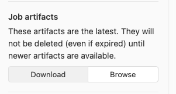

Installing Core ML Tools
This page describes how to install the coremltools Python package on macOS (10.13+) and Linux.
Supported Python and MacOS Versions
Support for Python 2 has been deprecated since Core ML Tools 4.1. The current version of coremltools includes wheels for Python 3.5, 3.6, 3.7, 3.8 and 3.9. The last stable release of coremltools to support Python 2 is version 4.0.
The supported MacOS versions are as follows:
Core ML Tools 4.1 supports macOS 10.13 and newer.
Core ML Tools 5 and 6 support macOS 10.15 and newer.
Prerequisites
For Beginners
If you are using macOS, you should already be familiar with the Mac Terminal app command line to perform tasks such as installations and updates. If you are using Linux, you should already be familiar with basic Shell commands in Linux.
Before installing coremltools, you need Python and the pip installer.
The coremltools package supports Python 3. We recommend that you install Python 3.6 or newer. Use a Python package manager such as Conda or venv to install the newest version of Python and other dependencies. Conda is recommended because it is the most reliable way to install all required dependencies.
Install or Build Core ML Tools
To install Core ML Tools, use one of the following methods:
The Conda package installer: Python is installed automatically. You can install
pipafter setting up the Conda environment. Skip to Set Up Conda.A virtual environment: Install
pip, and then usevenv, which also installs Python. Skip to Set Up a New Virtual Environment.Install a Python wheel: To download and install the most recent (or any available) Python wheel (
.whlfile) for Core ML Tools, see Install From Source.Build from source: To build the most recent (or any available) version of Core ML Tools, see Build From Source.
To install third-party frameworks, libraries, or other software, see Install Third-party Packages.
Set Up Conda
Follow these steps:
Use the appropriate Miniconda installer for your operating system.
Create a Conda environment for
coremltoolsusing the following command:
conda create --name coremltools-env
Activate your virtual environment using the following command:
conda activate coremltools-env
Install
pipfor this environment using the following command:
conda install pip
Follow the instructions in Install Core ML Tools.
Set Up a New Virtual Environment
Follow these steps:
Install
pipusing the following command:
python -m pip install --user --upgrade pip
Create a virtual environment using the following command:
python -m venv coremltools-venv
Activate the virtual environment:
source coremltools-venv/bin/activate
Follow the instructions in Install Core ML Tools.
Install Core ML Tools
Use the following command to install or upgrade to beta version 7.0b1 of Core ML Tools:
pip install coremltools==7.0b1
Use the following command to install or upgrade to the released version (release v6.3) of Core ML Tools:
pip install coremltools
Install Third-party Packages
Install the third-party source packages for your conversions (such as TensorFlow and PyTorch) using the package guides provided for them. The coremltools package does not include the third-party source packages.
Install From Source
The continuous integration (CI) system linked to the coremltools repo builds a Python wheel from the master branch whenever a commit is merged. To get the latest updates to the code base, you can get this wheel from the CI job and install it.
To access the wheel for a particular coremltools release, follow these steps:
Go to the
coremltoolsrepository on GitHub, scroll down to the README.md heading, and click the build passing button. The Branches tab appears:

Click the passed button to show the Pipeline tab:

Click a wheel in the Build column. For example, in the previous figure, the build_wheel_macos_py38 wheel is highlighted for clicking. After clicking a wheel, the raw job log appears, with the Download and Browse buttons in the right column:

Click the Download button to download the
distfolder with the wheel files.Install a wheel file using
pip. For example, use the following command to install thecoremltools-4.0-cp38-none-macosx_10_12_intel.whlwheel file for the 4.0 version of Core ML Tools:
pip install coremltools-4.0-cp38-none-macosx_10_12_intel.whl
Build From Source
To build Core ML Tools and its dependent libraries from source, you need to install CMake to configure the project.
To perform the build, fork and clone the coremltools repository and run the build.sh script:
zsh -i scripts/build.sh
The script creates a new build folder with the coremltools distribution, and a dist folder with Python wheel files.
For more information about building Core ML Tools, see Building From Source.
Upgrade Core ML Tools
For either Conda or virtual environments, see Install Core ML Tools for the command to upgrade Core ML Tools.